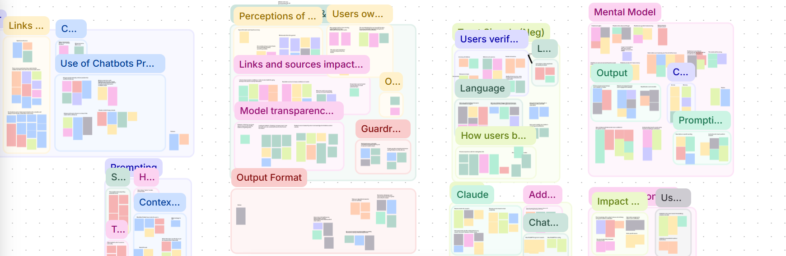

Understanding Generative AI Chatbots and User Trust
How do researchers decide whether to trust a chatbot’s output when doing academic research?
team
UX Research Intern Library Intern Sr. UX Researcher
my role
UX Research Intern
tools
Dovetail Figma
duration
2 months
quick summary
Harvard Library is building its own AI chatbot for research, but it had not studied how researchers decide whether to trust a chatbot’s output. Our team ran 11 moderated contextual inquiry sessions with experienced academic researchers, then analyzed them into five insights and five recommendations. I helped shape the session guide, moderated 4 of the sessions, contributed to the analysis, and wrote the final report.
The findings answered key research questions and provided design direction for the chatbot, including inline citations with passage previews, easy access to original sources, a plain-language explainer on how the chatbot works, and a default voice that flags uncertainty.
context
Generative AI chatbots are becoming a common tool in academic research, but every response from an AI chatbot raises the question of whether the output should be trusted or not.
The decision to trust or not trust the output ends up shaping citations, argument, and conclusions in actual academic work. As Harvard Library moves toward building its own AI chatbot for research tasks and expands its broader research agenda around AI and users, understanding what drives trust or distrust is important.
goal
This was an exploratory study. Our goal was to understand how academic researchers who were experienced AI chatbot users evaluate trust in GenAI chatbot output and use the findings to inform the design of Harvard Library’s new chatbot and the direction of their future research.
key research questions
How do researchers who use GenAI chatbots decide whether to trust a chatbot output when doing academic research?
How much does personal judgment, experience, and prior knowledge of the topic influence trust?
What aspects of the chatbot system and output shift belief up or down?
When a user doubts the response, what do they do next?
Does the task itself, its stakes, subject familiarity, or how long the conversation runs, change that threshold?
research methods: contextual inquiry
Our team ran 11 moderated contextual inquiry sessions with academic researchers who were experienced AI chatbot users (1+ years of experience using Gen AI chatbots). Each participant completed a series of realistic research tasks using their preferred chatbot, covering:
Low-stakes research
High-stakes research
Contested topics
A recent, real use case from their own research
After completing the tasks, participants answered a couple more questions about trust and their experience with AI chatbots.
research analysis: affinity diagramming
Following the contextual inquiry sessions, our team used Dovetail to code the transcripts by tagging data into buckets: positive, negative, behaviors, expectation, confusion, and observation. Then, we analyzed the tagged data and observations through affinity diagramming to identify major key findings.

findings
insight 01
A clickable citation was the strongest trust cue, but it only proves a source exists. It doesn’t prove the claim is true.
Citations matter for trust, but they’re not enough. All 11 participants said seeing a citation wasn’t enough on its own because they still needed to click through and check the source.
No citation was treated as a full stop.
Participants said fabricated citations are more rare now.
According to 8 of 11, the most common failure was a real citation misrepresented: the source exists but doesn’t say what the chatbot claims. This is harder to catch than a fake citation, since it requires reading the source and comparing it word for word.
recommendation 01
Link every claim to its source and show the passage behind it.
Hyperlink every citation and website. Unlinked citations and websites were named as a blocker.
Place the link next to the claim.
Show a source chip with the site name, with the exact passage previewed on hover.
Success looks like: less time verifying and more misrepresented citations caught.
insight 02
When researchers can see how an answer was produced, they trust it more and can catch problems early
Watching the chatbot’s “thinking” helped participants understand how it arrived at an answer and what sources it accessed. 9 of 11 participants who used Claude or ChatGPT mentioned the live search unprompted because it showed what the chatbot was searching for and reading.
“I like this feature [Claude’s live search] because it shows me what it’s looking at and I know that it’s not checking Reddit or something…sometimes if it goes to sources that are not related to my prompt, I can stop it and rewrite it.”
recommendation 02
Show its steps, name its sources, and say how current it is.
Present how it reached the answer in plain language.
Show which databases it searched, and whether it read each source in full or only the abstract.
Explain when its built-in knowledge ends and whether it searched for anything newer.
Test next: does a visible process improve people’s accuracy in judging answers or only their trust?
insight 03
As stakes rise, researchers leave the chatbot and go to the source
On low-stakes tasks, most trusted without verifying.
On high-stakes tasks, all participants refused to rely on it at all. This fits what our initial literature review found: trust only matters where there’s real uncertainty and vulnerability (Mayer et al.; Lee & See)
recommendation 03
Make it easy to get to the original source
This recommendation routes users out of the chat when that’s what they need.
Make the path fast and prominent rather than trying to hold the researcher inside the chat.
Put an Open full source button on every citation.
Consider adjusting behavior when a query looks high-stakes, with more citations and faster routing to primary sources.
A researcher leaving to read the primary source is the tool doing its job.
insight 04
Researchers don’t know how the chatbot works, so they do the work of establishing trustworthy results themselves
Participants held a variety of beliefs about how their chatbot finds sources: it scrapes Google, neglects older papers, pulls from Reddit and social media, only uses top journals.
“A PhD student could give me better sources than AI... it would only really find papers from the last 10 to 15 years... it also just neglects older, really equally needed literature or just chooses the most popular ones.”
Since no one trusted it by default, they worked to establish trustworthy responses themselves.
Check after: all 11 participants verified the output on most tasks, usually by checking claims against the cited source.
Control before: some participants built sophisticated guardrails into their prompts to push the chatbot toward trustworthy output before it answered.
recommendation 04
Explain how the chatbot works and how sources are chosen
Draft a short, plain-language explainer on how the system finds and selects sources, written with the team building it so it’s accurate for Harvard’s own system.
Address the beliefs participants raised most often, such as recency, source type, and journal prioritization, confirming the ones that are true and correcting the ones that aren’t.
Treat this as a hypothesis to test: does the explainer change how people prompt or how much they trust the output, and do they read it at all? The answer would also shape the Library’s future research on trust.
insight 05
A confident tone reads as a red flag. Honesty about limits builds trust.
Caveats and stated uncertainty raised trust. 10 of 11 participants pointed to the same warning signs:
Claims stated as absolute fact
Oversimplification of debated topics
Vague statements with nothing behind them
This runs against the product default of confident, polished output.
recommendation 05
Build the default voice to hedge and flag uncertainty
Present contested evidence explicitly (“sources disagree on this point”) instead of smoothing it into one confident-sounding answer.
We can’t overdo it. Too much stops acting as a signal and can be evasive. Targeted honesty about its limitations is what matters most.
assumption challenged
We began this study aiming to use our findings to increase researchers’ trust in the GenAI chatbot’s output. While this was still something we cared about, as the work progressed, a better question emerged: how do we also support the checking researchers already do by hand? That also changed what success looks like. Sometimes a good outcome is a researcher leaving the chat to read the primary source.
learnings
Going off script, staying on track This was my first time moderating contextual inquiries. I learned to notice when participants did or said something unexpected and asking about it brought out insights outside our planned questions. The challenge was knowing when a detour connected to the research questions. What helped was asking myself what I might lose if I didn’t pursue it.
Prioritize your research questions We had so many questions we wanted to ask, but it became clear during our pilot study that we needed to cut out quite a bit. Prioritize your research questions; keep additional questions if there’s time.
impact
Produced evidence on how researchers trust AI chatbot output and set design and research direction for Harvard Library’s research chatbot.
Answered the team’s key research questions on how researchers judge, verify, and act on GenAI output in academic research.
Provided design direction for Harvard Library’s chatbot: inline citations with passage previews, easy access to original sources, a plain-language explainer on how the chatbot works, and a default voice that flags uncertainty.
Surfaced findings that run counter to common product defaults, such as confident, polished answers reading as a red flag and citations proving a source exists but not that it supports the claim.
contribution
Shaped the study design by providing feedback on the contextual inquiry session guide to the UX Research lead and helped narrow the research questions after the pilot.
Moderated 4 of the 11 contextual inquiry sessions with academic researchers.
Helped turn data into findings. I coded transcripts in Dovetail and took part in the affinity diagramming session that produced the five insights.
Wrote the final report, including the five prioritized recommendations for Harvard Library’s chatbot.